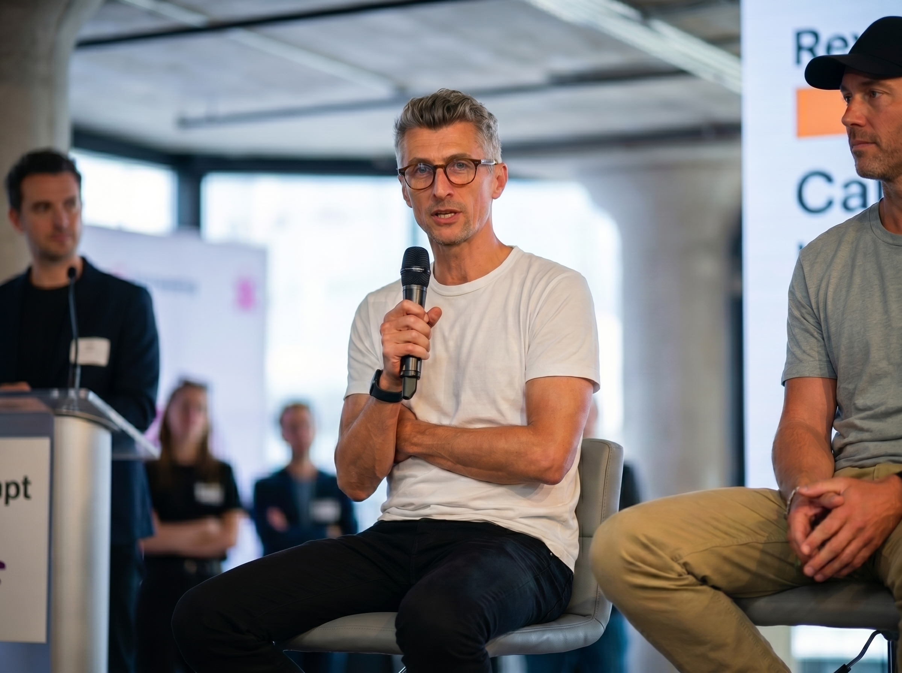

Everyone's asking "what will AI do next?" I think we're asking the wrong question.
My name is Yann. I've made a career out of creativity. Branding, advertising, design, experiential. I've started agencies and worked for many others. Today I'm in California, leading a team of creative technologists building tools, platforms and experiences for some of the most audacious brands in the world.
For over twenty years I've watched this industry reinvent itself. Digital. The internet. Social media. Web3. Immersive. And now AI.
It's no secret the industry is in deep disruption. My own journey with AI started a decade ago. We studied whether AI could take on human creativity. The results were startling. They led to articles, to talks, and eventually a stage at SXSW in front of 900 people.

Human creativity is on the brink of massive disruption. We may need to redefine its purpose. — SXSW Keynote
That was a few years ago. The questions it raised became the reason I started sharing the stories of creative people who are having AI 'For Breakfast' — shaping this technology to empower their own missions.
So instead of asking "what will AI do next?" I went looking for the people asking: how are we going to use AI to create the future we actually want? A future that stays human. Creative. Cultural, joyful, always fresh and full of surprise.